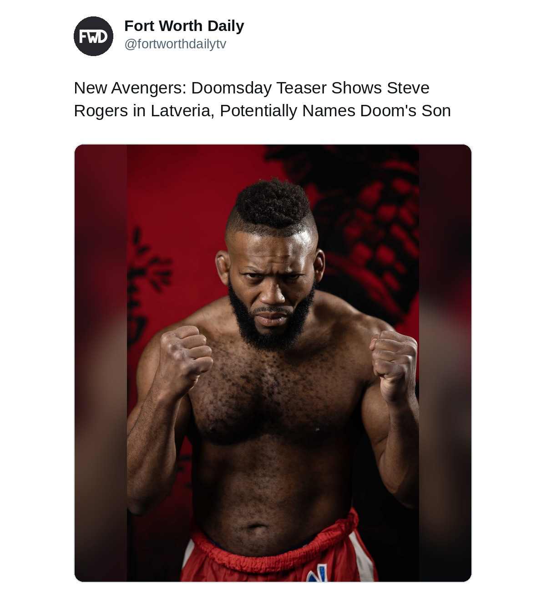

FWD
Fort Worth Daily
Just now · 🌎 · other · template writer
Just now · 🌎 · other · template writer
Marvel Studios has released yet another Avengers: Doomsday trailer, this one focusing on Steve Rogers doing "what needs to be done" in Latveria. The clip, which is doing the rounds on social media, starts with Rodgers and Peggy Carter’s son asking him if he was a superhero, as we saw and heard in the final trailer released earlier this week. “There were six of us,” he replies.

FWD
story + scoring
{
"source": "IGN",
"kind": "rss",
"score": 0.3112,
"relevance": 2,
"url": "https://www.ign.com/articles/new-avengers-doomsday-teaser-shows-steve-rogers-in-latveria-potentially-names-dooms-son",
"image_license": "wikimedia-cc",
"image_credit": "Photo: JohnDoomsdayHoward via Wikimedia Commons (CC BY-SA 4.0)"
}